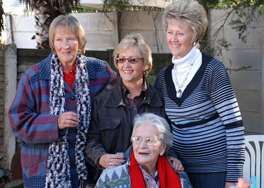

|
Indeks: |
Jos Le Roux ‘n oud Suid-Afrikaner wat in Kanada woon, doen navorsing na die geskiedenis van die Krynauw familie. Hy het onlangs vir ons geskryf en ‘n klompie baie belangrike aanvullende gegewens vir ons familiekroniek deurgegee. Dit raak die familie van b6.c1.d3.e1. Pieter Hendrik Henning *21-1-1853.
Dit was bekend dat Pieter Hendrik te Burgersdorp gebore en groot geword het, maar dat hy, sy vrou Jacoba Levina (gebore De Klerk) *1854 en hulle kinders reeds voor, of tydens die Anglo Boere-oorlog na Pietersburg verhuis het. Hy het gedurende die oorlog op kommando gegaan, maar het op 2-6-1901 oorgegee. Omdat die Britte hom nog as ‘n burger van die Kaapkolonie beskou het, is hy van hoogverraad aangekla en skuldig bevind. Soos talle ander Kaapse Rebelle, was sy vonnis dat hy vir ‘n tydperk van vyf jaar nie vir enige openbare amp verkies mag word, of in enige sodanige verkiesing mag stem nie.
Hy en sy gesin was van die Hennings wat in 1905 na Argentinië emigreer het. Teen ongeveer 1909/10 keer hy terug na Suid-Afrika. Ons kon egter geen spoor van sy vrou, Jacoba Levina vind nie. Dit was onseker of sy dalk in Argentinië oorlede is en of sy saam met haar man teruggekeer en na sy dood weer getrou het.
Jos Le Roux het nou vir ons laat weet dat na Pieter Hendrik Henning se dood op 11-4-1913 sy weduwee JACOBA LEVINA (gebore DE KLERK) gedurende 1914 te Burgersdorp hertrou het met Douw Gerbrand GROBLER (sy vierde huwelik) *Steynsburg 1844, †“Blaauwkrantz”, Albert 19-Nov-1926. Hulle stel in 1920 ‘n testament op. Op Douw Gerbrand GROBLER se Sterfkennisgewing word hy as getroud aangedui, ofskoon sy skoonseun uit sy eerste huwelik die dokument onderteken. Dit bevestig vir ons dat JACOBA LEVINA (gebore DE KLERK) na 19 November 1926 oorlede is.
Jos Le Roux laat weet ook vir ons dat Pieter Hendrik Henning se vierde dogter, b6.c1.d3.e1.f4. SUSANNA MARIA *Burgersdorp 17-11-1883 op 31-Mei-1905 te Burgersdorp getroud is met Jan Hendrik KRYNAUW (s/v Daniël Eduard KRYNAUW en Maria Cecilia VAN PLETZEN) *8-Sep-1879, †28-Jan-1933. Hulle skei egter gedurende 1915 en sy hertrou ongeveer 1916 met Christopher Harry BARRETT.
Uit dokumentasie van b6.c1.d3.e1.f4. SUSANNA MARIA se skeisaak verwys sy na haar ma (JACOBA LEVINA [gebore DE KLERK]) wat in 1914 op die punt is om na Argentinie te vertrek – vermoedelik saam met Douw Gerbrand GROBLER. Indien hulle wel soontoe is, moes Douw Gerbrand GROBLER voor 1926 teruggekeer het, want hy is toe in die distrik Albert (Burgersdorp) oorlede. Ons weet nie waar (SA of Argentinie) die testament in 1920 opgestel is nie. Miskien het JACOBA LEVINA DE KLERK in Argentinië agter gebly en daarom nie Douw Gerbrand GROBLER se Sterfkennisgewing geteken nie.
Ofskoon dit nie direk met die Hennings verband hou nie, is dit interessant dat Jan Carel KRYNAUW (s/v Daniël Eduard KRYNAUW en Maria Cecilia VAN PLETZEN en broer van Jan Hendrik) getroud was met Johanna Hendrina GROBLER, d/v Douw Gerbrand GROBLER se tweede huwelik met Maria Jacoba COETZEE. Verder, Douw Gerbrand GROBLER se derde huwelik was met Maria Cecilia VAN PLETZEN (ook haar derde huwelik.) Dus was Douw Gerbrand GROBLER getroud met sy skoonseun se ma, en was SUSANNA MARIA se skoonma ook haar stiefma.

Ons het in die doodsberigte van die Burger van 7 April 2011 verneem van die afsterwe van Marthina Brink Henning (gebore Smuts) *13-8-1926 van Goodwood in die Wes-Kaap. Sy is op 3 April 2011 in Kaapstad oorlede, in die ouderdom van 84 jaar en sewe maande en was die eggenote van wyle b7.c13.d5.e1. Johannes Lodewyk Henning *29-7-1923. Na die doodsberig was ons gelukkig om haar seun Frederik (noemnaam Freddie) op te spoor en kon ons hulle familie se genealogiese gegewens ook op datum bring en verskeie ou familie foto’s bekom.
Ons het ook verneem van die dood van b5.c1.d3.e9.f1.g2. Susanna Hendrika (Drika) van Heerden (gebore Henning) *20-8-1946 op 14-4-2011. Sy het in ‘n motorongeluk gesterf. Sy was die dogter van Joseph Johannes Philippus Henning *3-11-1911 en sy vrou Elizabeth Johanna (gebore van der Walt). Sy is gebore en het groot geword te Springfontein en het skool gegaan aan die Hoërskool Springfontein. Na haar huwelik met Jeremias Jesajas van Heerden het hulle verskeie kere verhuis en op die laaste het hulle op Steelpoort gebly. Die betrokke naweek in April het hulle in Nelspruit gaan kuier. Sy is dood in ‘n kop-aan-kop botsing in ‘n bergpas naby Lydenburg.
Terwyl Drika op skool was, was hulle bure die gesin van b5.c1.d5.e6.f1.g1. Jacobus Cornelius Henning *22-1-1917 en sy vrou Janetta Hendrika. Sy en die buurdogter, Isabella Fredrieka Henning *1-9-1944 was groot maats. Isabel het vir ons van haar vriendin se dood laat weet.
b6.c4.d1.e5.f7.g7.h2.i1. Sonja Wright (gebore Henning) het vir ons laat weet dat haar oupa b6.c4.d1.e5.f7.g7. Jan Adriaan Henning gebore 01-04-1930 op 20-04-2011 in Sebokeng oorlede is, aan 'n hart-aanval. Sonja laat weet ook dat haar oom Riaan (b6.c4.d1.e5.f7.g7.h1. Jan Adriaan) Henning *01-09-1953 oorlede is op 14-08-2010, ook aan 'n hartaanval in Meyerton.
Sonja se pa het foto’s van beide oorledenes, maar hy is tans in die buiteland. Sy sal mettertyd vir ons foto’s van haar oupa en oom stuur.
b6.c4.d1.e5.f4.g14. Jacoba Danielina Smit (gebore Henning) *7-4-1938 is op 13-4-2011 te Benoni oorlede. Sy was die veertiende kind van Willem Frederik Henning *29-4-1886 en sy vrou Cornelia Catharina Jacoba (gebore Venter). Jacoba en haar man, Jacob Johannes Smit, gebore 27-10-1930 het self twaalf kinders gehad. Hulle het hulle hele lewens lank te Lichtenburg en Benoni gewoon. Na haar man se dood het sy by haar dogter, Jacoba Lottering gaan bly.

Een van ons ou steunpilare, b6.c4.d1.e5.f9.g6. Mauritz Martin Henning *10-4-1936 het vir ons laat weet dat hy en sy vrou Ollie op 9 April 2011 oupa – en oumagrootjie geword het. Hulle oudste dogter, Loma (Maria Saloma), getroud Groenewald, se seun Mauritz en sy vroutjie, Andrea het ‘n babaseuntjie, Henry ryker geword.
Hy was ‘n prematuur baba en het met geboorte (drie maande voor die tyd) slegs 1.2 kg geweeg. Hy is vanaf sy geboorte, tot en met 30 Junie in die Femina hospitaal gehou, voordat hy huistoe kon gaan. Sy mammie moes elke dag hospitaal toe ry om hom by te staan en die ouers en grootouers kon hom elke Sondagaand besoek.
Dit was vir die hele familie ‘n baie spanningsvolle tyd, want so ‘n babatjie het nie veel kans op oorlewing nie. Die hospitaal spesialiseer in die behandeling van prematuur babas en lewer ‘n puik diens — natuurlik teen ‘n prys.
Mauritz sê dit is wonderlik om vier geslagte bymekaar te wees. Met sy ouers en grootouers bygereken, sal hy dus in sy lewe ses geslagte van sy familie geken het — wat ‘n voorreg!


Van tyd tot tyd verneem ons van bekende sportmanne wat een of ander verbintenis met die Henning familie het. Die jongste geval wat onder ons aandag gekom het, is Phillip Schutte, wat gedurende die 1990’s ‘n Springbok rugbyspeler was.
Philippus Jacobus Wilhelmus Schutte *7-10-1969 se ouers is Willem Frederik Schutte *20-5-1945 en Anna Maria Jacoba Vlok. Willem Frederik Schutte was die seun van Philippus Jacobus Wilhelmus Schutte en b6.c1.d1.e12.f5. Aletta Francina Henning *18-4-1920. Willem Frederik Schutte is na sy oupa Henning vernoem.
Philip Schutte verwerf sy BCom graad in Finansiële Bestuur aan die Universiteit van Pretoria. As rugbyspeler maak hy sy provinsiale debuut as slot vir N-Tvl en speel ook vir Transvaal en WP. Hy speel onder andere in die Curriebeker finaal op 5 Oktober 1991 teen Transvaal toe hulle die Curriebeker gewen het. Hy word ook 'n Springbok (Springboknommer 582).

Dit is al lankal vir ons duidelik dat die getal Hennings in Suid-Afrika drasties aan die afneem is. Ons het die totale getal Hennings in Suid-Afrika in die tagtigerjare op ongeveer 4 000 geraam. Dit het geklop met die syfers van Hennings ouer as 18-jaar wat op die 1989 kieserslys geregistreer was — 2850. Tel hierby die getal kinders jonger as 18-jaar.
Ons het dit reggekry om die 2011 kieserslys te bekom en moes tot ons ontnugtering agterkom dat daar nou slegs 1820 Hennings geregistreer is — ‘n afname van 56.6%.
Redes vir hierdie drastiese afname in getalle kan vermoedelik hoofsaaklik aan die volgende faktore toegeskryf word:
1. Afname in getal geboortes oor die afgelope veertig tot vyftig jaar;
2. Emigrasie;
3. Groot getalle blankes is nie meer as kiesers geregistreer nie. Ons is bewus van verskeie Hennings wie se name nie meer op die kieserslyste verskyn nie.
Dit sal ‘n diepgaande studie verg om te bepaal of daar dalk nog ander redes is en wat die invloed van elkeen is.

In die vorige Haantjie het ons vertel van Leonard (Len) Andrews van Falkirk, Skotland wat baie trots op sy ouma Henning en verdere voorsate is. Nadat hy sy eksemplaar van die Haantjie ontvang het, het hy vir ons die volgende brief geskryf:
Please accept my grateful thanks for the latest newsletter. I was surprised and delighted that i at last made the front page, and we are so proud that you included our 40th wedding anniversary celebration picture. I will show my mother the article and explain to her you helped me trace her family origins. She is resident in a nursing home and has slight dementia, but i am sure she will understand what i tell her.
I hope you and the family are all well and look forward to going online and learning more of the Henning league and history. The cufflinks and lapel badge are greatly admired and people are surprised about my family history and how I came to discover it.
I will close now in thanking you all once again, and i am sure i will be in touch in the not too distant future.
As they say here in Scotland; awrabest. Translation=All the best.
Fond regards,
Len and Moira

Ons het ‘n Vonkpos van Randy Henning van Norman, Oklahoma, VSA ontvang. Hy doen navraag of ons enige spoor kon vind van Hennings wat van Westphalia en omliggende gebiede in Duitsland gekom het.
Lippstadt, die geboortedorp van ons stamvader Pieter Hendrik (Peter Henrich) Henning, gebore 1 Desember 1740 val vandag natuurlik in die Westphalia gebied, waarvan Randy praat. Ons het die besonderhede van al Peter Henrich Henning se broers en susters, waarvan die oudste in 1730 en die jongste in 1746 gebore is, asook die geskiedenis van hierdie Henning familie, aan Randy verstrek. Hierna skryf hy terug. Interessantheidshalwe plaas ons sy brief, onveranderd:
Good to hear from you and make contact. I have spent some time on your web site and a number of additional reference sites. I am quite a History Buff and have been fascinated with our Henning History, and will appreciate your keen insight from your perspective and vantage point. As previously indicated, I am a Henning hailing from Norman, Oklahoma, USA. Let me begin by sharing with you what I do know and have confirmed. I will confine my remarks to a direct genealogical chain from myself as a starting point of going backwards, but that will not be all inclusive, just the most direct examination and approach at this point. And to this end, I have two brothers.
Our Father is James Howard Henning, also from and born in Norman, Oklahoma, USA. Dad has two Brothers, one deceased, and one Sister, also hailing from the area. Dad’s Father and my Grand-Father, William Alexander Henning was born in McKinney, Texas (much to our chagrin; I’ll have to explain this to you later). William Alexander Henning was born to Francis (Frank) Henning and Emily (Hollman) Henning. It is my understanding that Grand-Father Frank was born in Germany, Westphalia area I am advised, up around the Rhine (Rhyn) area. Frank Henning was born @ 1841. I am still gathering information in this regard. He was a Farmer and served in the American (USA) Civil War with the Union Cause. My understanding is he mustered in @ Illinois, USA area. Not sure or not if this was anywhere near the port of entry he entered the USA in or not. I am also gathering additional information in this regard. His Wife Emily (Hollman) was from around the Missouri, USA area. In addition to Grand-Father, Frank, who was the oldest sibling, there were six (6) other children as well; four boys and two girls. There were also a boy and two additional twin brothers who perished in childbirth or as infants. The name of the first was James, same as my Dad. It is my understanding at this point that all of these children above referenced were born in the USA, some Missouri, Oklahoma and Texas. I am gathering documentation on this as well, but am reasonably sure of this.
I have located some references that an Anton Henning, born “on the Atlantic Ocean” on or about 10/08/1854 to Charlie and Teresa (Vogt) Henning, natives of Germany who came to the USA in 1854. Research indicates that Charlie and Teresa Henning settled in and around Effingham City, Douglas Township., Illinois about 1854. Charlie was a “miller, and later a butcher in the Effingham area. He had also worked for the Vadalia Railroad. I do not have sufficient information to make a definitive connection between Anton and Frank, but appears there may possibly be a connection that they may possibly be brothers. I am simply not comfortable making that assertion at this point. This is one of those thing I do not know.
Any insight you may have is welcomed and warmly appreciated. I am working on photos of Grand-Father Francis and Grand-Mother Emily. My Dad tells me that he is told he saw Grand-Father Frank once as a little child. He seems to have some recollection of Grand-Mother Emily though.
Best Regards, and look forward to hearing from you.
Randy W. Henning, J.D.
Soos al die ander mense uit die VSA wat by ons navraag doen of ons enige gegewens ten opsigte van hulle voorsate het, beskik Randy net eenvoudig nie oor genoeg gegewens vir ons om behulpsaam te wees nie. Daar is ongelukkig meer as ‘n 100-jaar gaping tussen die geboortedatums van Peter Henrich Henning se broers en Randy se voorsate — ongeveer vier geslagte — dus is dit nie moontlik om enige koppeling te bewerkstellig nie. In sy geval, het ons probeer om basiese genealogiese navorsingstegnieke onder sy aandag te bring en hom aangeraai om by die sterfregisters in die Staatsargiewe van die betrokke Amerikaanse State te begin.

In die Haantjie van November 2007 (no92) het ons berig oor Otto Henning, wat teen die einde van die negentiende eeu die eerste Henning veearts in Suid-Afrika was. Otto het geen verbintenis met enige van die Henning stamme in Suid-Afrika gehad nie en het teen die einde van sy lewe in die ou Suid-Wes Afrika (Namibië) gewoon. Ons het die beriggie oor Otto Henning afgesluit met die opmerking dat dit spesiale navorsing in Namibië sal verg om te bepaal of hy enige nasate gehad het. Onlangs ontvang ons die volgende Vonkpos brief van ‘n Craig Hilton-Taylor.
I came across your Henning web site during a search for Otto Henning the first vet in South Africa.
I can confirm that Otto married Mary Frances COOK (1871 – 1955) on 29 Aug 1898 near Kimberley in the Cape. They had three daughters:
1). Ida Mary Henning born 13 July 1899 in Bloemfontein (she married Charles Claude Wayland)
2). Ellen Louise Henning born 07 Feb 1904 (no further details)
3). Angela Freda Henning born 13 Aug 1907 (no further details)
So not much to add, but may be useful info for your Henning project.
My interest in them is through the COOK family.
Best wishes
Craig Hilton-Taylor

Baie dankie aan almal wat oor die afgelope drie maande bydraes aangestuur het. Baie dankie ook aan diegene wat maandeliks per debietorder bydraes stuur. Ons lede verseker dat die Familiebond lewenskragtig en vooruitstrewend bly. Soos gewoonlik vermeld ons die name van lede wat buitengewone bydraes gelewer het:
Marthinus (MC) Henning van Welkom, ‘n Lewenslange Lid — R250.00
Gesina Spangenberg van Swakopmund, Namibië — R300.00
Elsie Henning van Pierre van Ryneveldpark, Centurion, ‘n Erelid — R500.00
Lede wat op ‘n jaarlikse grondslag by dra, kry van tyd tot tyd ‘n kennisgewing met die bankbesonderhede van die Familiebond, sodat hulle enige bydraes sommer direk in hierdie rekening kan inbetaal.
Vir die gerief van Lewenslange – en Erelede wat ook graag ‘n bydrae wil lewer, vermeld ons graag die Familiebond bankbesonderhede: ABSA Bank, Villiersdorptak (334-612); Rekeningnaam – Henning Familiebond; Rekening nommer – 2890 610 423

Ons het verneem dat b1.c6.d3.e13.f5.g1.h1. Ernest Theunis (Theuns) Henning *21-6-1979 en sy vroutjie Michonne (gebore van Wyk) *22-6-1986 op 6 Junie 2011 ‘n babadogtertjie, Lika Henning ryker geword het. Sy is in die Medikliniek Meyerton gebore — gewig 3.4kg.
Baie geluk aan die ouerpaar en oupa, Theunis Phillippus Henning *9-2-1950 en sy vrou Tania. Ongelukkig kon ons nie betyds ‘n foto van die kleinding bekom nie.

|  |
b9.c1.d4.e6.f1. Fredrika Wilhelmina Alberts (gebore Henning), of Tant Driekie, soos sy algemeen bekend staan, het op 30 Junie 2011 98-jaar oud geword. Na ons wete is sy tans die oudste Henning in Suid-Afrika.
Haar susterskind, Henning Pieterse het vir ons laat weet hoe dit tans met Tant Driekie gaan en het ‘n klompie foto’s van haar verjaardag-partytjie saamgestuur. Hy laat weet dat Tant Driekie baie agteruitgegaan het sedert verlede jaar. Sy moet met alles gehelp word en maak gebruik van 'n rolstoel om oor die weg te kom. Haar geheue is baie swak en moet sy telkens herinner word wie dit is wat met haar wil praat.
Sy het van die gewone tehuis oorbeweeg na die versorgingseenheid. Sy vertel dat sy saans voor sy aan die slaap raak, telkens die Here loof vir die dag wat verby is en Hom daaraan herinner dat sy lankal gereed is om na Hom te gaan. Net om die volgende oggend weer wakker te word en Hom dan te dank vir 'n nuwe dag en te bid vir sy genade vir die dag wat voorlê.
Sy vertel ook dat sy al haar mooi klere weg gegee het en net klere oorgehou het om mee te kan lê op die bed. Haar sig en gehoor het ook baie agteruit gegaan en kan sy daarom nie meer lees nie en ook nie regtig meer kommunikeer nie.
Slegs Tant Driekie se dogter, Elize [Anna Maria Elizabeth (getroud van der Merwe)] wat in die Kaap woon, kon nie haar verjaardag partytjie bywoon nie.

Mary-Ann Henning – Dit is die glimlag wat 'n mens het, wanneer jy weet jy het 'n droom bewaarheid - ek het dit reggekry, my Skepper het my daardie voorreg gegee! Wat 'n lewe!
Mary-Ann Henning (48), vrou van b7.c8.d8.e1.f2.g2. Stanley Henning van Wierdapark, Centurion bedryf ‘n swem- en akwarobiese skool by hulle huis. Hulle het ‘n buitengewone groot, verhitte en binnenshuise swembad. Mary-Ann gee swemlesse vir volwassenes en kinders en verskeie geneeshere verwys pasiënte na haar vir akwarobiese oefeninge. Al hierdie aktiwiteite maak dat Mary-Ann besonder fiks is. Afgesien hiervan is sy ook ‘n ywerige pad- en veldloop atleet. Die honderde medaljes wat sy reeds tydens wedlope verwerf het, is getuienis van al die wedlope waaraan sy al deelgeneem het. Deesdae pak Mary-Ann ook die ultra lang wedlope, soos die Comrades - en Twee Oseane Marathons aan.
Hierdie jaar voltooi sy binne die bestek van vyf weke die Twee Oseane Marathon op 23 April 2011 in die Kaapse Skiereiland in 6 ure 18 minute en op 29 Mei 2011 die op-wedloop van die Comrades Marathon vanaf Durban na Pietermartizburg in 11 ure 17 minute en 33 sekondes en verwerf dus ‘n brons medalje. Dit is ‘n besondere prestasie om beide hierdie wedlope binne so ‘n kort tydperk te voltooi! Gewoonlik het mens etlike maande nodig om te herstel van so ‘n wedloop.
Mary-Ann skryf die volgende oor die Twee Oseane Marathon: “Die mooiste roete - jy kan nie help om met 'n glimlag te hardloop nie. Een van my Aqua vrouens het vir my 'n boodskap voor die wedloop gestuur - Sy het gebid dat ek iemand moet kry wat saam met my die hele roete kan hardloop en toe sê die Here vir haar dat ek reeds iemand het wat saam met my hardloop: Sy Engel.”
“Die hele Twee Oseane pad het ek geweet en gevoel hoe die Engel van die Here my dra - oor Chapmans Peak met sy pragtige uitsig en op met Constantia nek met die groot bome - alles so mooi - en met die vlerke van die Engel om my en ek voel ek kan sing en juig, maar ek buig my kop in nederigheid terwyl ek oor die eindstreep draf - alleen deur Sy genade”.
Oor die Comrades Marathon skryf Mary-Ann as volg:
Die hele Comrades ervaring begin eintlik op die Vrydag 27 Mei. Ons vertrek uit Centurion stiptelik om 4:30 die oggend. Eerstens om die verkeer op die N1 te mis – glo dit of jy wil of nie – van 4:45 af is daar ‘n sterk moontlikheid dat jy baie stadig oor Johannesburg gaan ry. Tweedens om vroeg in Pietermaritzburg te wees om my nommer en “goody bag” te kry nadat my “champion chip” op die rekenaar geregistreer is, sodat dit opgetel word wanneer ek oor die matte hardloop, wat op 5 afsnypunte op die roete geplaas is. Ons is vroeg 10:15 op Pietermaritzburg en is opgewonde om by Westbrook, waar ons oornag, uit te kom. Watter terleurstelling! Die kabels is gesteel, niemand kan by Pietermaritzburg by die Comrades huis registreer of in Durban by die expo nie! Twee en ‘n halfuur later is die kabels herstel en ons kan uiteindelik vertrek. Nou is die opgewonde benoudheid weer ‘n realiteit.
Saterdag kyk ons net vir die see, bene in die lug – rusdag voor die groot C. Die keer is dit my verjaarsdag – dus lekker word my aandag afgetrek deur telefoonoproepe en sms’e tot 10-uur die aand.
Ons dag – dit is nou my en my vriendin (Ansie Conradie)- begin Sondagoggend 29 Mei om 3 uur. Opstaan, aantrek, hawermoutpap vir ontbyt – bietjie koffie vir spoed. Sakkies om my lyf gepak vir die dag se voorraad – haar koelhouer gepak vir haar dag en my koelhouer wat by haar bly met my lemoensap vir die dag. Ons ken nie die paaie in Durban na die beginpunt nie – dus volg ons vriende se kar. Met 14 000 mense oppad na dieselfde bestemming is dit nie so maklik as wat dit klink nie – dit is spitsverkeer op sy beste, 4uur die oggend.
Ons word afgelaai ongeveer 4:35. Soos met enige wedloop, soek eers die toilette – vir my die laaste keer vir die dag. Daarna soek ons die blokke waarin ons moet wegspring. In my vriendekring beteken dit van blok C (ek het vriende wat so vinnig is) tot blok G – dis nou waar ek - die skilpad wat my lyf atleet hou – wegspring.
Nou wag ons vir die 5:30 groot oomblik! Intussen vlieg die helikopter oor en almal wuif. Die Stem speel en ons almal sing saam. Shoshalosa word uit volle bors saamgesing – al ken jy nie die woorde nie! Chariots of fire speel en meeste raak stil en emosioneel. Tussenin bid ek en ek is seker ‘n paar ander om my onophoudelik – want die groot C is onvoorspelbaar.
Dan breek die oomblik aan – die haan kraai – en ‘n oomblik later skiet die skoot. Die wedloop het begin – maar ons staan nog stil, want die vinnige mense voor ons moet wegkom – dit vat my hierdie jaar 6min 30sek om oor die begin mat te kom – dis ‘n gepeep soos almal oor die mat beweeg en op die rekenaar geregistreer word. Die groot bondel bly ‘n bondel tot op die 3km merk. Die dag breek en ek is op die oop pad, baie mense om my, maar tog alleen saam met die Here op die pad. Dit is die Op Comrades en ek weet dit van die oomblik wat ek uit Durban uit hardloop op die snelweg.
Daar is die groot 5 op die pad na Pietermaritzburg: Voor die halfpad merk is Cowies Hill, Fields Hill en Botha’s Hill. Na die halfpad merk is Ichanga en Polly Shorts. Die mense het vergeet om die ander bulte name te gee of dalk sou dit ‘n mens moedeloos maak as jy weet hoeveel bulte in die vallei van ‘n duisend heuwels is. Die km bordjies gaan amper ongesiens verby tot op 70km om te gaan – die eerste afsnypunt is aan die kom op amper 57 om te gaan, maar ek voel goed en alles gaan volgens die plan wat ek vir my uitgewerk het – waar ek elke 5km moet wees.
Op Botha’s Hill kyk ek uit vir my vriendin met my lemoensap – die krampe het begin en ek verloor tyd – dus gryp ek my sap met ‘n vinnige dankie en beweeg aan – dit maak haar bekommerd!
Ek haal die halfpadmerk met genoeg spaartyd en voel goed. Ek begin teen Drummond uithardloop, maar moet begin stap. Verloor tyd as gevolg van krampe en besef dat daar nog 35km is om te gaan – dis nou net gebed en vasbyt wat my kan red. Geen spoed op afdraendes nie – anders gaan ek in ‘n vol been kramp en mors meer tyd!
Nou kyk ek elke km na my tyd – ek gaan dit maak as niks drasties gebeur nie. Ek bid so baie dat ek seker is die Here wens ek wil stilbly dat Hy die ander mense ook kan hoor. Ek maak die ander afsnypunte maklik en dit gee daardie bietjie ekstra selfvertroue om vas te byt. My goeie vriendin is soos afgespreek by Camperdown – 25km om te gaan - met my lemoensap, ‘n glimlag en aanmoediging – dit beteken so baie!
Ek stap teen ‘n spoed wat ander stappers sou jaloers maak, waar ek nie kan hardloop nie – Op Polly Shorts weier my lyf om eers in ‘n effense draf passie in te gaan en ek kyk liewer nie op nie.
Bo-op die laaste van die groot 5 – nog net 7 om te gaan – genoeg tyd op die klok – net nie nou mal raak nie! Ek voel goed genoeg en my hart sing toe ek die stadion aan die buitekant omgaan. Ek hardloop in op die gras – al geselsend met ‘n klubmaat wat ek raak gedraf het op 2km om te gaan en ons besluit om dit ‘n spanpoging te maak tot op die einde. My hart sing my gunsteling psalm 23 — Die Here is my Herder.
Hardloop is vir my nie net ‘n fisiese uitdaging en ervaring nie, maar is ‘n geestelike ervaring wat ek vir niemand kan beskryf nie. Dit is fantasties!